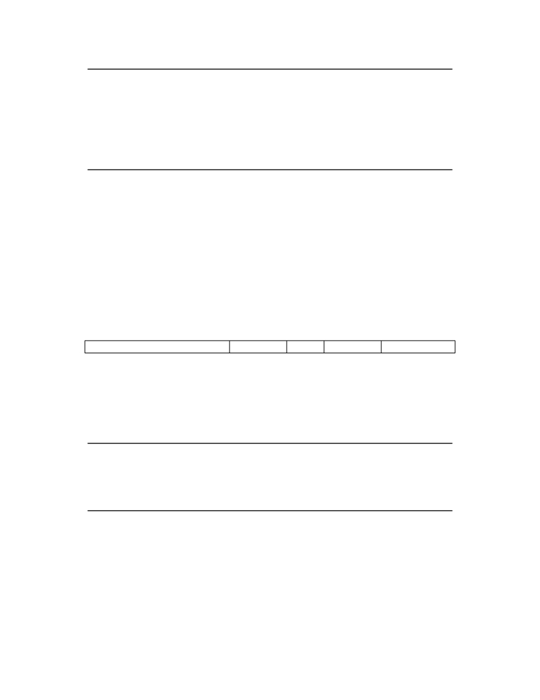

<table border="0" height="1453" width="1123">
<tr><td>
<div style="position:absolute; top:0; left:0;"></div>
<div style="position:absolute;top:74.119;left:132.145;"><nobr>
<span style="font-size:20.022;font-style:italic;">Volume II: RISC-V Privileged Architectures V20190608-Priv-MSU-Ratified</span>
</nobr></div>
<div style="position:absolute;top:74.119;left:971.067;"><nobr>
<span style="font-size:20.022;">41</span>
</nobr></div>
<div style="position:absolute;top:153.720;left:182.201;"><nobr>
<span style="font-size:18.285;font-style:italic;">Previously, there was only a single ERET instruction (which was also earlier known as SRET).</span>
</nobr></div>
<div style="position:absolute;top:175.661;left:182.201;"><nobr>
<span style="font-size:18.285;font-style:italic;">To support the addition of user-level interrupts, we needed to add a separate URET instruction</span>
</nobr></div>
<div style="position:absolute;top:197.603;left:182.201;"><nobr>
<span style="font-size:18.285;font-style:italic;">to continue to allow classic virtualization of OS code using the ERET instruction. It then became</span>
</nobr></div>
<div style="position:absolute;top:219.545;left:182.201;"><nobr>
<span style="font-size:18.285;font-style:italic;">more orthogonal to support a different</span>
<span style="font-size:18.285;">x</span>
<span style="font-size:18.285;font-style:italic;">RET instruction per privilege level.</span>
</nobr></div>
<div style="position:absolute;top:255.461;left:132.145;"><nobr>
<span style="font-size:20.022;">If the A extension is supported, the</span>
<span style="font-size:20.022;font-style:italic;">x</span>
<span style="font-size:20.022;">RET instruction is allowed to clear any outstanding LR</span>
</nobr></div>
<div style="position:absolute;top:280.328;left:132.145;"><nobr>
<span style="font-size:20.022;">address reservation but is not required to. Trap handlers should explicitly clear the reservation if</span>
</nobr></div>
<div style="position:absolute;top:305.195;left:132.145;"><nobr>
<span style="font-size:20.022;">required (e.g., by using a dummy SC) before executing the</span>
<span style="font-size:20.022;font-style:italic;">x</span>
<span style="font-size:20.022;">RET.</span>
</nobr></div>
<div style="position:absolute;top:362.538;left:182.201;"><nobr>
<span style="font-size:18.285;font-style:italic;">If</span>
<span style="font-size:18.285;">x</span>
<span style="font-size:18.285;font-style:italic;">RET instructions always cleared LR reservations, it would be impossible to single-step</span>
</nobr></div>
<div style="position:absolute;top:384.480;left:182.201;"><nobr>
<span style="font-size:18.285;font-style:italic;">through LR/SC sequences using a debugger.</span>
</nobr></div>
<div style="position:absolute;top:447.567;left:132.145;"><nobr>
<span style="font-size:21.942;font-weight:bold;">3.2.3</span>
</nobr></div>
<div style="position:absolute;top:447.567;left:207.516;"><nobr>
<span style="font-size:21.942;font-weight:bold;">Wait for Interrupt</span>
</nobr></div>
<div style="position:absolute;top:504.984;left:132.145;"><nobr>
<span style="font-size:20.022;">The Wait for Interrupt instruction (WFI) provides a hint to the implementation that the current</span>
</nobr></div>
<div style="position:absolute;top:529.851;left:132.145;"><nobr>
<span style="font-size:20.022;">hart can be stalled until an interrupt might need servicing. Execution of the WFI instruction</span>
</nobr></div>
<div style="position:absolute;top:554.718;left:132.145;"><nobr>
<span style="font-size:20.022;">can also be used to inform the hardware platform that suitable interrupts should preferentially be</span>
</nobr></div>
<div style="position:absolute;top:579.585;left:132.145;"><nobr>
<span style="font-size:20.022;">routed to this hart. WFI is available in all privileged modes, and optionally available to U-mode.</span>
</nobr></div>
<div style="position:absolute;top:604.453;left:132.145;"><nobr>
<span style="font-size:20.022;">This instruction may raise an illegal instruction exception when TW=1 in mstatus , as described</span>
</nobr></div>
<div style="position:absolute;top:629.322;left:132.145;"><nobr>
<span style="font-size:20.022;">in Section</span>
<span style="font-size:20.022;color: #000080;"><a href="#" onClick="javascript:parent.GotoNewPage(34); return false">3.1.6.4</a></span>
<span style="font-size:20.022;">.</span>
</nobr></div>
<div style="position:absolute;top:689.421;left:193.776;"><nobr>
<span style="font-size:14.628;">31</span>
</nobr></div>
<div style="position:absolute;top:689.421;left:462.272;"><nobr>
<span style="font-size:14.628;">20 19</span>
</nobr></div>
<div style="position:absolute;top:689.421;left:581.182;"><nobr>
<span style="font-size:14.628;">15 14</span>
</nobr></div>
<div style="position:absolute;top:689.421;left:652.523;"><nobr>
<span style="font-size:14.628;">12 11</span>
</nobr></div>
<div style="position:absolute;top:689.421;left:785.578;"><nobr>
<span style="font-size:14.628;">7 6</span>
</nobr></div>
<div style="position:absolute;top:689.421;left:928.288;"><nobr>
<span style="font-size:14.628;">0</span>
</nobr></div>
<div style="position:absolute;top:711.275;left:294.440;"><nobr>
<span style="font-size:20.022;">funct12</span>
</nobr></div>
<div style="position:absolute;top:736.875;left:322.451;"><nobr>
<span style="font-size:20.022;">12</span>
</nobr></div>
<div style="position:absolute;top:761.742;left:312.022;"><nobr>
<span style="font-size:20.022;">WFI</span>
</nobr></div>
<div style="position:absolute;top:711.275;left:524.046;"><nobr>
<span style="font-size:20.022;">rs1</span>
</nobr></div>
<div style="position:absolute;top:736.875;left:532.282;"><nobr>
<span style="font-size:20.022;">5</span>
</nobr></div>
<div style="position:absolute;top:761.742;left:532.245;"><nobr>
<span style="font-size:20.022;">0</span>
</nobr></div>
<div style="position:absolute;top:711.275;left:607.723;"><nobr>
<span style="font-size:20.022;">funct3</span>
</nobr></div>
<div style="position:absolute;top:736.875;left:627.426;"><nobr>
<span style="font-size:20.022;">3</span>
</nobr></div>
<div style="position:absolute;top:761.742;left:607.087;"><nobr>
<span style="font-size:20.022;">PRIV</span>
</nobr></div>
<div style="position:absolute;top:711.275;left:724.103;"><nobr>
<span style="font-size:20.022;">rd</span>
</nobr></div>
<div style="position:absolute;top:736.875;left:728.938;"><nobr>
<span style="font-size:20.022;">5</span>
</nobr></div>
<div style="position:absolute;top:761.742;left:728.901;"><nobr>
<span style="font-size:20.022;">0</span>
</nobr></div>
<div style="position:absolute;top:711.275;left:839.304;"><nobr>
<span style="font-size:20.022;">opcode</span>
</nobr></div>
<div style="position:absolute;top:736.875;left:859.762;"><nobr>
<span style="font-size:20.022;">7</span>
</nobr></div>
<div style="position:absolute;top:761.742;left:822.864;"><nobr>
<span style="font-size:20.022;">SYSTEM</span>
</nobr></div>
<div style="position:absolute;top:823.617;left:132.145;"><nobr>
<span style="font-size:20.022;">If an enabled interrupt is present or later becomes present while the hart is stalled, the interrupt</span>
</nobr></div>
<div style="position:absolute;top:848.484;left:132.145;"><nobr>
<span style="font-size:20.022;">exception will be taken on the following instruction, i.e., execution resumes in the trap handler and</span>
</nobr></div>
<div style="position:absolute;top:875.013;left:132.145;"><nobr>
<span style="font-size:20.022;">mepc = pc + 4.</span>
</nobr></div>
<div style="position:absolute;top:930.695;left:182.201;"><nobr>
<span style="font-size:18.285;font-style:italic;">The following instruction takes the interrupt exception and trap, so that a simple return from</span>
</nobr></div>
<div style="position:absolute;top:952.637;left:182.201;"><nobr>
<span style="font-size:18.285;font-style:italic;">the trap handler will execute code after the WFI instruction.</span>
</nobr></div>
<div style="position:absolute;top:988.551;left:132.145;"><nobr>
<span style="font-size:20.022;">The purpose of the WFI instruction is to provide a hint to the implementation, and so a legal</span>
</nobr></div>
<div style="position:absolute;top:1013.418;left:132.145;"><nobr>
<span style="font-size:20.022;">implementation is to simply implement WFI as a NOP.</span>
</nobr></div>
<div style="position:absolute;top:1070.761;left:182.201;"><nobr>
<span style="font-size:18.285;font-style:italic;">If the implementation does not stall the hart on execution of the instruction, then the interrupt</span>
</nobr></div>
<div style="position:absolute;top:1092.703;left:182.201;"><nobr>
<span style="font-size:18.285;font-style:italic;">will be taken on some instruction in the idle loop containing the WFI, and on a simple return</span>
</nobr></div>
<div style="position:absolute;top:1114.645;left:182.201;"><nobr>
<span style="font-size:18.285;font-style:italic;">from the handler, the idle loop will resume execution.</span>
</nobr></div>
<div style="position:absolute;top:1150.561;left:132.145;"><nobr>
<span style="font-size:20.022;">The WFI instruction can also be executed when interrupts are disabled. The operation of WFI must</span>
</nobr></div>
<div style="position:absolute;top:1175.428;left:132.145;"><nobr>
<span style="font-size:20.022;">be unaffected by the global interrupt bits in mstatus (MIE/SIE/UIE) and the delegation registers</span>
</nobr></div>
<div style="position:absolute;top:1201.957;left:132.145;"><nobr>
<span style="font-size:20.022;">[m|s]ideleg (i.e., the hart must resume if a locally enabled interrupt becomes pending, even if it</span>
</nobr></div>
<div style="position:absolute;top:1225.162;left:132.145;"><nobr>
<span style="font-size:20.022;">has been delegated to a less-privileged mode), but should honor the individual interrupt enables</span>
</nobr></div>
<div style="position:absolute;top:1250.030;left:132.145;"><nobr>
<span style="font-size:20.022;">(e.g, MTIE) (i.e., implementations should avoid resuming the hart if the interrupt is pending but</span>
</nobr></div>
<div style="position:absolute;top:1274.899;left:132.145;"><nobr>
<span style="font-size:20.022;">not individually enabled). WFI is also required to resume execution for locally enabled interrupts</span>
</nobr></div>
<div style="position:absolute;top:1299.766;left:132.145;"><nobr>
<span style="font-size:20.022;">pending at any privilege level, regardless of the global interrupt enable at each privilege level.</span>
</nobr></div>
</td></tr>
</table>
